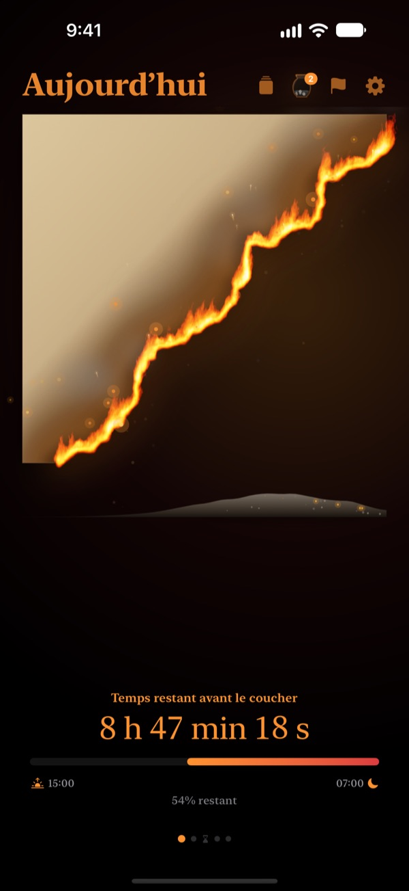
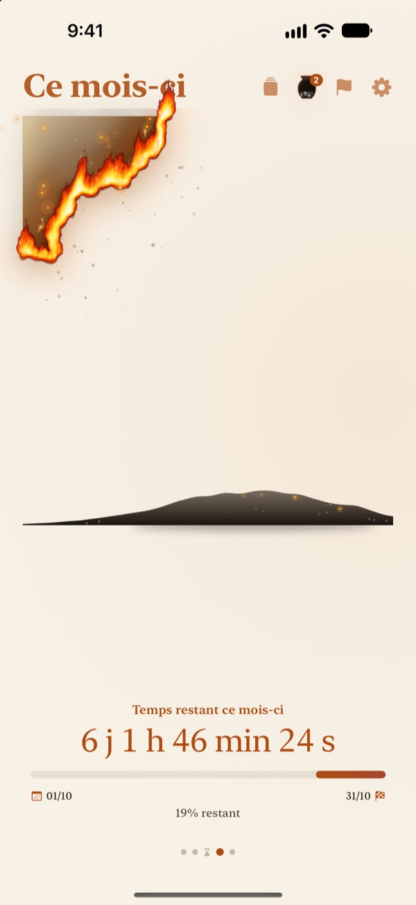
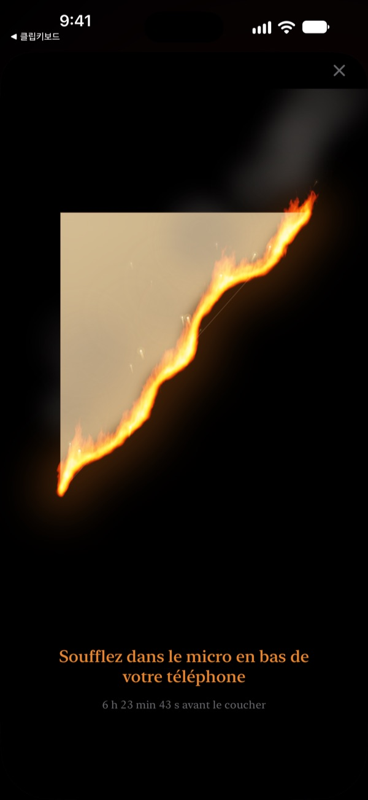
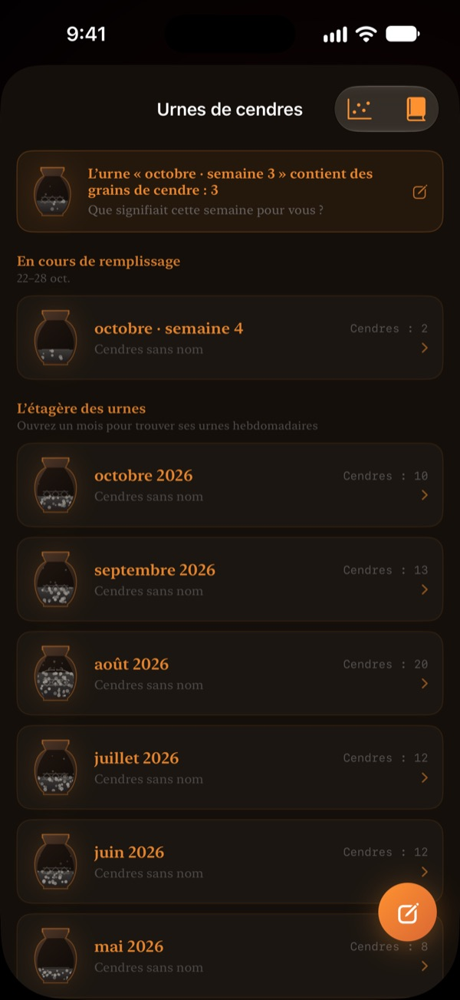

Ce qu'il reste d'aujourd'hui
brûle sous vos yeux
Une soirée qui semble anodine en chiffres prend un autre visage sous la forme d'un parchemin en feu. Trente minutes avant le coucher, soufflez sur l'écran pour éteindre la flamme et clore la journée.
Le parchemin en flammes, le rituel du souffle et les bilans sont gratuits.

Soufflez pour essayer
Avancez l'heure juste avant le coucher, puis maintenez le bouton ou soufflez dans le micro.
« Déjà minuit ? » Ça vous dit quelque chose ?
On dîne, on se pose cinq minutes, et la journée est passée. Les chiffres de l'horloge se ressemblent chaque soir, alors on ne sent pas le temps filer. Parchemin en flammes montre ce qu'il reste sous la forme d'un parchemin qui se consume, pour que vous le remarquiez avant que la soirée ne disparaisse.
Votre journée, votre semaine, votre année se consument
Du réveil jusqu'au coucher, le parchemin brûle lentement. Voyez aussi ce qu'il reste de la semaine, du mois et de l'année.
Ajoutez un objectif daté comme échéance et son compte à rebours avance en parallèle.

Éteindre la journée d'un souffle
Dès 30 minutes avant le coucher, soufflez sur le parchemin pour éteindre le feu. Seule la force du souffle est utilisée, rien n'est enregistré.
Le fragment qui reste est conservé. Retournez-le et écrivez une ligne sur votre journée au dos.

Le temps passé devient cendre
Faites le bilan du jour en une ligne et placez-le comme un point sur un graphique à deux axes selon l'usage de ce temps. Les bilans s'accumulent dans des urnes de cendres par semaine et par mois, à relire dans le Livre des bilans.
Le Flux de cendres montre où votre temps est parti, avec un graphique de répartition et un calendrier de braises.

Trois étapes pour commencer
- 1
Réglez réveil et coucher
Touchez la roue dentée en haut à droite. Le parchemin s'allume et s'éteint selon cet horaire.
- 2
Choisissez la période
Balayez entre jour, semaine, mois et année, ou masquez les pages inutiles dans les Réglages.
- 3
Ajoutez un widget
Sur l'écran d'accueil ou l'écran verrouillé, le temps restant s'affiche sans ouvrir l'app.
Où voir le temps qu'il reste
- Jour
- Du réveil jusqu'au coucher
- Semaine · Mois · Année
- Ce qu'il reste de la semaine, du mois et de l'année
- Temps libre
- Le parchemin de la semaine ne brûle que pendant les heures que vous gardez pour vous (Pro)
- Échéances
- Temps restant jusqu'à la date d'un objectif. Une est gratuite
- Widgets de l'écran d'accueil
- Parchemin du jour en petit, moyen et grand. Semaine, mois, année et échéances en petit et moyen
- Widgets de l'écran verrouillé
- Circulaire, rectangulaire et en ligne
- Dynamic Island · Activité en direct
- Dès une heure avant le coucher, ou toute la journée. À choisir ou désactiver dans les Réglages
Développez la Dynamic Island pour voir le parchemin en flammes avec le compte à rebours complet.
Le parchemin est gratuit. Pro en garde davantage.
Gratuit
- Parchemins du jour, de la semaine, du mois et de l'année
- Souffler la flamme et garder les fragments
- Bilans en une ligne, urnes de cendres et Livre des bilans
- Point du matin, avec les données de sommeil de Santé si vous le souhaitez
- Widgets d'accueil et d'écran verrouillé, Dynamic Island
- Une échéance
Parchemin en flammes Pro
- Ne brûler que votre temps libre
- Thèmes : Hanji au clair de lune, Céladon, Crépuscule
- Flammes : Feu de prairie, Braises, Cierge magique
- Partager vos fragments en cartes et en affiches
- Exporter le Livre des bilans en PDF
- Douze mois de Flux de cendres
- Échéances illimitées
Pas d'abonnement. Un seul achat, à vie, avec toutes les fonctions Pro à venir.
Nouvel appareil ? Touchez Restaurer les achats dans les Réglages.
Questions fréquentes
Le widget n'affiche pas la même heure que l'app.
iOS ne redessine pas les widgets de l'écran d'accueil chaque seconde. Ouvrir l'app les resynchronise. Pour un compte à rebours à la seconde, utilisez la Dynamic Island et l'Activité en direct de l'écran verrouillé.
Je souffle, mais le feu ne s'éteint pas.
On ne peut l'éteindre qu'à partir de 30 minutes avant le coucher. Vérifiez que l'accès au micro est autorisé, puis soufflez régulièrement pendant environ une seconde près du micro en bas de l'iPhone. Un bruit bref ne suffit pas.
Ma voix est-elle enregistrée ?
Non. Seule la force du souffle est mesurée. Aucun son n'est enregistré ni conservé.
Qu'affiche l'app pendant que je dors ?
Après l'heure du coucher, un cœur en flammes apparaît et montre où en est votre nuit jusqu'au réveil. Le matin, l'app vous demande si vous vous êtes couché à l'heure ; si c'était tard, le parchemin du jour commence d'autant roussi. Reliée à l'app Santé, elle utilise l'heure d'endormissement enregistrée sans vous la demander.
Quand arrivent les notifications ?
Une heure avant le coucher. Si rien n'arrive, vérifiez Réglages > Notifications > Parchemin en flammes.
L'app consomme-t-elle beaucoup de batterie ?
Le compte à rebours dans l'app avance chaque seconde, mais les widgets sont actualisés par iOS en mode économe. L'impact reste faible.
Où sont stockées mes données ?
Vos heures, échéances, bilans et urnes restent sur votre appareil. Le développeur ne reçoit que des statistiques d'utilisation anonymes, des diagnostics de plantage et les retours que vous choisissez d'envoyer. Ni publicité ni pistage.
Pro est-il un abonnement ?
Non. Vous payez une fois et le gardez à vie. Sur un nouvel appareil, touchez Restaurer les achats dans les Réglages.
Bug, idée ou autre question : écrivez à leeo@kakao.com.